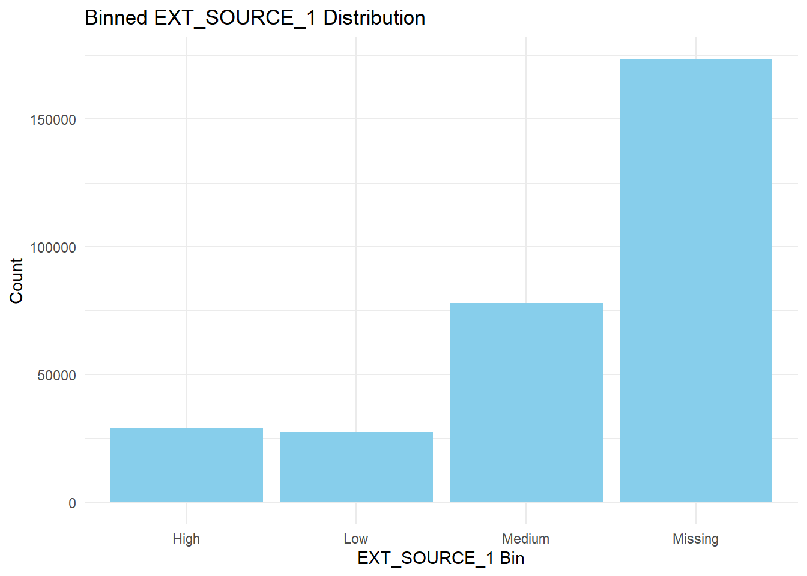
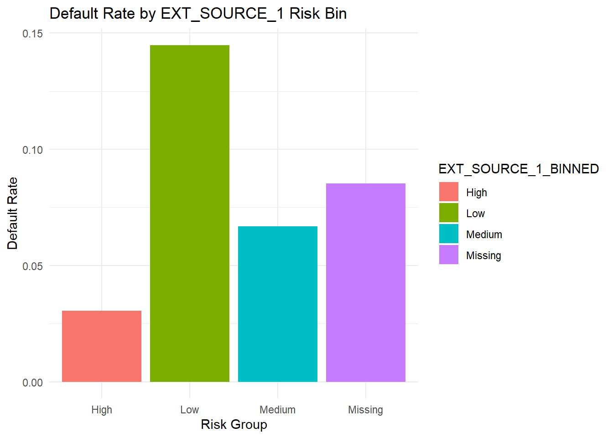

library(tidyverse) # for data manipulation
library(readr) # for reading csv
library(ggplot2)
library(dplyr)Rule-Based Data Binning for Credit Risk Modeling in R
Introduction to Binning
Binning is a fundamental data preprocessing technique used across various data science, machine learning, and statistical modeling tasks. It involves converting continuous numeric variables into discrete categories or intervals known as “bins.” This approach is commonly applied in:
Customer segmentation
Marketing analytics
Sensor data analysis
Medical data grouping
Financial risk modeling
Why Do We Use Binning?
Binning helps address challenges when continuous data is complex, noisy, or difficult to interpret. General benefits include:
Converts detailed numeric values into understandable categories—for Example, High, Medium, and Low.
Minimizes the influence of extreme values or anomalies.
Allows business users and non-technical stakeholders to easily interpret results.
It helps break data into meaningful groups for targeted strategies.
Missing values can be categorized and analyzed separately.
Importance of Binning in Risk Analysis
In financial and credit risk analysis, binning is critical because risk scores or predictive model outputs are often continuous but need to be:
Explained to non-technical stakeholders.
Used for rule-based decision-making (e.g., “Reject if High Risk”) and flagging based on Risk analysis.
Grouped to compare default rates or risk levels.
In the Home Credit Default Risk dataset, binning external risk scores like EXT_SOURCE_1 helps:
Simplify complex numeric data.
Segment customers by risk level (Low, Medium, High)
Analyze default rates across groups.
Handle missing risk scores properly.
Loading Libraries and Data
Load Required Libraries {#Load Required Libraries}
Load Dataset
# Replace the file path with your dataset location
data <- read_csv("application_train.csv")
# Preview the data
glimpse(select(data, EXT_SOURCE_1, TARGET))Rows: 307,511
Columns: 2
$ EXT_SOURCE_1 <dbl> 0.08303697, 0.31126731, NA, NA, NA, NA, 0.77476141, NA, 0…
$ TARGET <dbl> 1, 0, 0, 0, 0, 0, 0, 0, 0, 0, 0, 0, 0, 0, 0, 0, 0, 0, 0, …Binning a Numeric Predictor (EXT_SOURCE_1)
Convert the numeric predictor into categories Low, Medium, High, and Missing if NA.
# Define a binning function
bin_ext_source <- function(x) {
if (is.na(x)) {
return("Missing")
} else if (x <= 0.3) {
return("Low")
} else if (x <= 0.7) {
return("Medium")
} else {
return("High")
}
}
# Apply the function to create a new binned column
data <- data %>%
mutate(EXT_SOURCE_1_BINNED = sapply(EXT_SOURCE_1, bin_ext_source))
# Check the counts in each bin
table(data$EXT_SOURCE_1_BINNED)
High Low Medium Missing
28764 27459 77910 173378 High Score Group (28,764 clients): These are customers with EXT_SOURCE_1 scores above 0.7. They are low-risk clients expected to have a low probability of default.
Low Score Group (27,459 clients): Customers with EXT_SOURCE_1 scores less than or equal to 0.3. These are high-risk clients more likely to default.
Medium Score Group (77,910 clients): Moderate-risk customers with scores between 0.3 and 0.7.
Missing (173,378 clients): A significant number of clients have missing EXT_SOURCE_1 values. This group needs careful handling as missing could:
Contain hidden risk
Be due to data collection issues
Importance of this Distribution:
The “Missing” bin dominates the dataset, raising questions:
Should we treat missing as high-risk or low-risk?
Does missing correlate with default behavior?
Proper treatment of this group is crucial in credit scoring models. It can be done using Sensitivity Analysis / Modeling Scenarios:
Scenario 1: Treat Missing as a medium-risk group (keep it).
Scenario 2: Run the model excluding Missing and compare results.
Scenario 3: Impute missing values if external sources are available.
Visualize Binned Variable
library(ggplot2)
ggplot(data, aes(x = EXT_SOURCE_1_BINNED)) +
geom_bar(fill = "skyblue") +
labs(title = "Binned EXT_SOURCE_1 Distribution", x = "EXT_SOURCE_1 Bin", y = "Count") +
theme_minimal()
Default Rate Analysis by Risk Group
Calculate Default Rates
default_rate <- data %>%
group_by(EXT_SOURCE_1_BINNED) %>%
summarise(DefaultRate = mean(TARGET, na.rm = TRUE), Count = n())
default_rate# A tibble: 4 × 3
EXT_SOURCE_1_BINNED DefaultRate Count
<chr> <dbl> <int>
1 High 0.0306 28764
2 Low 0.145 27459
3 Medium 0.0667 77910
4 Missing 0.0852 173378High Score Group (28,764 clients): Low-risk group with the lowest default rate (3%).
Low Score Group (27,459 clients): High-risk group with the highest default rate (14.5%).
Medium Group (77,910 clients): Moderate risk with a 6.7% default rate.
Missing Group (173,378 clients): Default rate of 8.5%, higher than medium and high groups, suggesting some hidden risk.
Visualize Default Rate
ggplot(default_rate, aes(x = EXT_SOURCE_1_BINNED, y = DefaultRate, fill = EXT_SOURCE_1_BINNED)) +
geom_bar(stat = "identity") +
labs(title = "Default Rate by EXT_SOURCE_1 Risk Bin", x = "Risk Group", y = "Default Rate") +
theme_minimal()
Key Insight:
Clear evidence that lower external scores correlate with higher default risk.
Missing group requires special attention due to its size and relatively high default rate.
Statistical Testing
Chi-Square Test
chisq_test <- chisq.test(table(data$EXT_SOURCE_1_BINNED, data$TARGET))
chisq_test
Pearson's Chi-squared test
data: table(data$EXT_SOURCE_1_BINNED, data$TARGET)
X-squared = 2746.7, df = 3, p-value < 2.2e-16The chi-square test is highly significant (p < 2.2e-16), confirming that default rates differ significantly across the risk bins.
Strong statistical evidence that the binning strategy is meaningful in separating risk levels.
Logistic Regression Using Binned Variable
The logistic regression model is built to:
Quantify the impact of each risk bin (Low, Medium, High, Missing) on the probability of default.
Validate binning effectiveness by checking if the groups significantly differ in predicting default.
Support risk-based decision-making by estimating how much safer or riskier one group is compared to another.
Handle binary outcomes like default (TARGET=1) or non-default (TARGET=0), which logistic regression is designed for.
Prepare Data for Modeling
data <- data %>% mutate(EXT_SOURCE_1_BINNED = factor(EXT_SOURCE_1_BINNED, levels = c("Low", "Medium", "High", "Missing")))
model_data <- data %>% select(TARGET, EXT_SOURCE_1_BINNED) %>% drop_na()Build Logistic Regression Model
model_binned <- glm(TARGET ~ EXT_SOURCE_1_BINNED, data = model_data, family = "binomial")
summary(model_binned)
Call:
glm(formula = TARGET ~ EXT_SOURCE_1_BINNED, family = "binomial",
data = model_data)
Coefficients:
Estimate Std. Error z value Pr(>|z|)
(Intercept) -1.77600 0.01715 -103.56 <2e-16 ***
EXT_SOURCE_1_BINNEDMedium -0.86203 0.02236 -38.54 <2e-16 ***
EXT_SOURCE_1_BINNEDHigh -1.68106 0.03831 -43.88 <2e-16 ***
EXT_SOURCE_1_BINNEDMissing -0.59776 0.01919 -31.16 <2e-16 ***
---
Signif. codes: 0 '***' 0.001 '**' 0.01 '*' 0.05 '.' 0.1 ' ' 1
(Dispersion parameter for binomial family taken to be 1)
Null deviance: 172542 on 307510 degrees of freedom
Residual deviance: 169770 on 307507 degrees of freedom
AIC: 169778
Number of Fisher Scoring iterations: 6The intercept represents the log-odds of default for the baseline “Low” risk group.
Medium Group: Shows a significant negative coefficient (-0.86203), meaning less likelihood of default compared to the “Low” risk group.
High Group: Strong negative coefficient (-1.68106), indicating very low default risk compared to “Low”.
Missing Group: Also less risky than “Low” but riskier than “High” or “Medium”.
Predict Default Probability for a High-Score (Low-Risk of Defaulting) Example
new_client <- data.frame(EXT_SOURCE_1_BINNED = factor("High", levels = c("Low", "Medium", "High", "Missing")))
predict(model_binned, newdata = new_client, type = "response") 1
0.03055903 A customer in the “High” score bin has only a 3.05% chance of defaulting, confirming the low-risk nature of this group.
Key Takeaway
Binning makes numeric scores explainable.
Low-score groups have significantly higher default risk.
Logistic regression confirms that “High” and “Medium” groups are safer.
The chi-square test and modeling validate binning as a strong strategy for risk prediction.
Logistic regression quantifies the risk difference across bins, providing clear, actionable insights.
Binned variables improve modeling, decision-making, and communication with non-technical stakeholders.